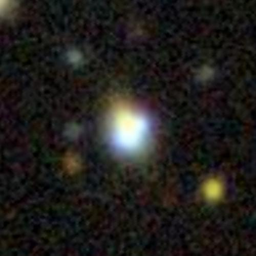

J1330+1810 — Ancillary Data

DEIMOS Data
HST Data
Program 15320 Public
Probing the dark universe with quadruply imaged quasars.
Archival Data (> 10 yr)
Older programs, observed more than 10 years ago (ordered by wavelength).
| Telescope / Instrument | Program (PI) | Data | Date | Archive |
|---|---|---|---|---|
| HST / WFC3-IR | 13732 (Nierenberg) | F105W imaging + G102 grism | Jul 2015 | MAST HST Search |
| Keck I / OSIRIS | U021OL, U019OL (Treu) | AO-assisted NIR IFU spectroscopy | Apr – May 2015 | KOA Search |
Survey Coverage
Wide-field optical/NIR surveys that cover this target, with the bands that have catalogue detections within 30″.
Spectroscopy: SDSS spectrum (2007). SDSS SkyServer